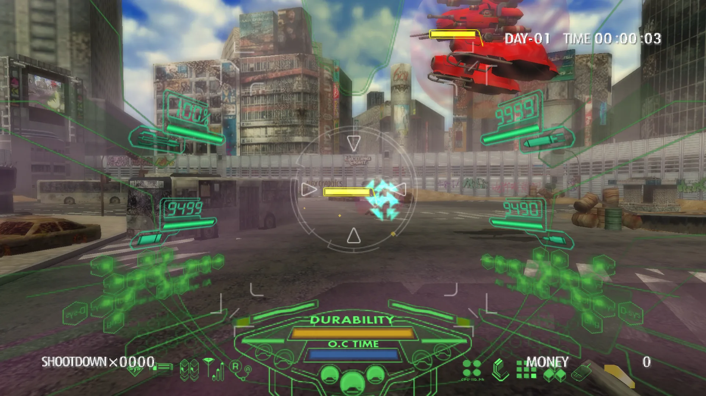
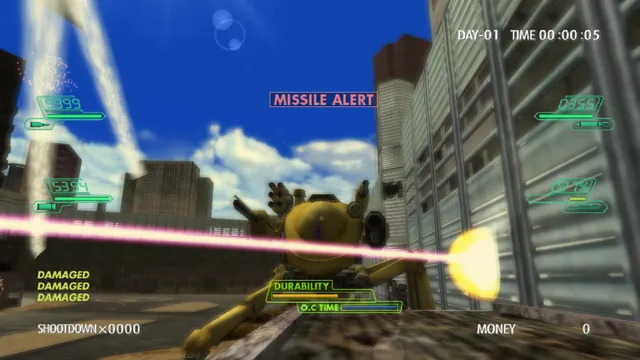
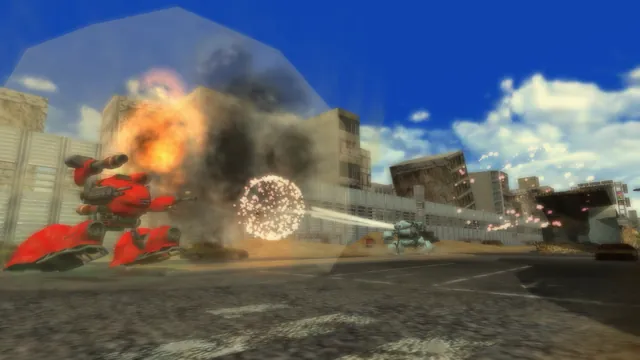
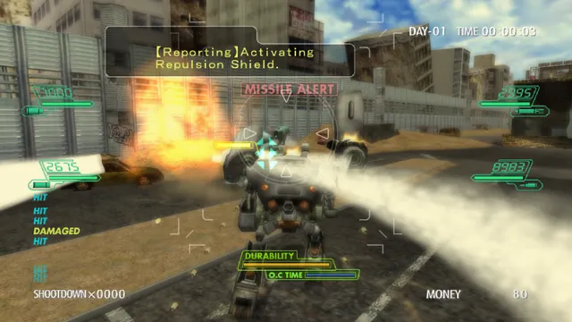
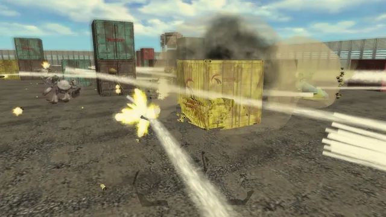
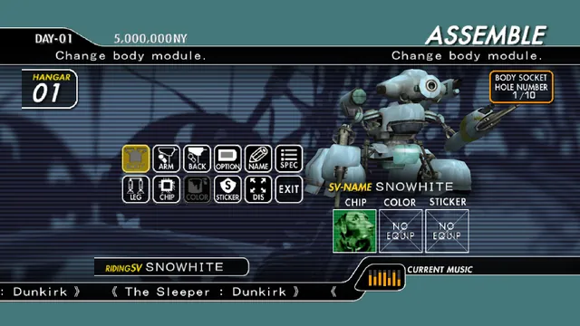
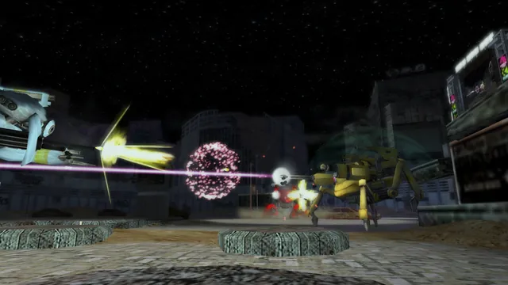
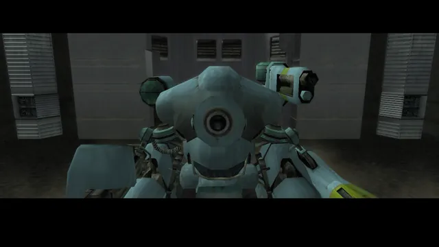

Windows, Mac and Linux. Free.
Phantom Crash is Genki's 2002 Xbox game of small mechs called Scoobees, built up in a garage and fought in the streets of a future Tokyo. OpenPCrash is a new program that plays it on a computer: the same fights, the same garage and tournaments, at any resolution and frame rate, with a keyboard and mouse or a pad, and split-screen VS for up to four.
It plays the game you own. None of the original game comes with the download: the first time you start OpenPCrash, it reads your copy once and keeps what it needs on your computer.
















OpenPCrash needs your Phantom Crash disc, the North American (USA) release, made into a disc
image (an .iso file) or copied off as the game's folder. You make it yourself,
from the disc you own. Ordinary PC DVD drives can't read Xbox game discs, so it's done one of
these ways:
- With an original Xbox that runs a homebrew dashboard: copy the game's
folder (the one with
default.xbeandMediain it) from the disc to your computer over the network. - With a DVD drive that can read Xbox discs (some older drives, with firmware made for it) and a disc dumping program: this makes a full disc image.
- If you already play your copy in an Xbox emulator, the
.isoyou use there works as it is.
Then start OpenPCrash and drag the .iso or the folder onto its window. A
.zip or .7z has to be unpacked first. Setup takes about a minute and
needs about 4 GB free. It all happens on your computer: nothing is uploaded.
OpenPCrash can send crash and bug reports to help fix bugs. It asks once, the first time, and they're off unless you say yes. A report holds:
- the last lines of the game's log, with your home folder taken out of any path;
- the game's version, your system and its version, and your graphics card and driver;
- your PC Config settings;
- in a fight, the fight's button presses, so it can be played back exactly;
- if you send one yourself with Report a Bug: your note, and a small picture of the paused fight if you leave that on.
No names and nothing else from your computer. The server keeps no IP addresses. Turn it off any time in Options, PC Config, Game, Crash Reports.
This site counts its own visits: the page, your country and city, the site that sent you, your browser and system, and clicks on the downloads. No cookies, and no IP addresses kept. If your browser is set to Do Not Track or Global Privacy Control, nothing is sent.
The Mac says it can't open the app
The app isn't signed by Apple, so macOS asks the first time. On macOS 15 and newer, try to
open it, then go to System Settings, Privacy & Security, scroll down and choose
Open Anyway beside OpenPCrash. On macOS 12 to 14, right-click (or Ctrl-click) the
app, choose Open, then Open again. If it says the app is "damaged", run this once in
Terminal: xattr -dr com.apple.quarantine OpenPCrash.app
Where are my saves?
Saves, settings and the game data read from your disc are kept here:
- Windows:
%APPDATA%\OpenPCrash\OpenPCrash\ - Mac:
~/Library/Application Support/OpenPCrash/OpenPCrash/ - Linux:
~/.local/share/OpenPCrash/OpenPCrash/
Your saves are in saves. Deleting data and cooked
makes OpenPCrash ask for the disc again; the saves stay.
Can I use a controller?
Yes. An Xbox-style pad works button for button like the original's; most other pads work too. Plug them in any time. With more than one pad, VS is split-screen. Keyboard and mouse work out of the box, and every binding can be changed in Options, PC Config.
Which copies work?
The North American (USA) disc. A plain Xbox image, a full disc image with the video partition, or the game's folder all work. Other regions aren't read yet.
What computer does it need?
Graphics with Vulkan (most cards and chips from 2016 on; on a Mac it's built in), and about 4 GB of disk space for the data read from your disc.